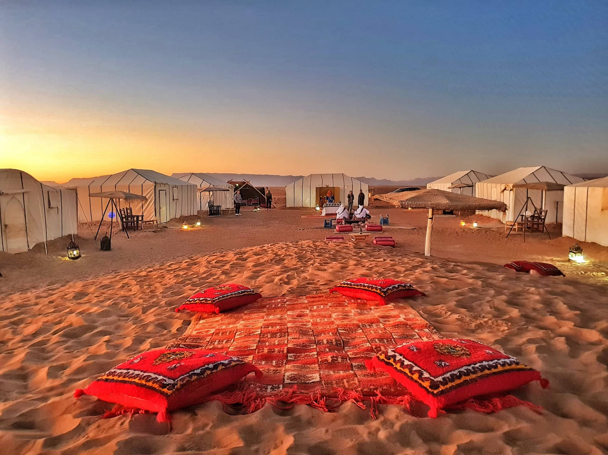

Merzouga
Merzouga
Drâa-Tafilalet

Merzouga is a small village in southeastern Morocco, about 35 km (22 mi) southeast of Rissani, about 55 km (34 mi) from Erfoud, and about 50 km (31 mi) from the Algerian border.
The village is known for its proximity to Erg Chebbi, and it is for this reason that a part of the itineraries of many tourists visit Morocco. It has been described as "a desert theme park", and the Erg Chebbi as "a wonderland of sand".Merzouga has the largest natural underground body of water in Morocco
Reserve